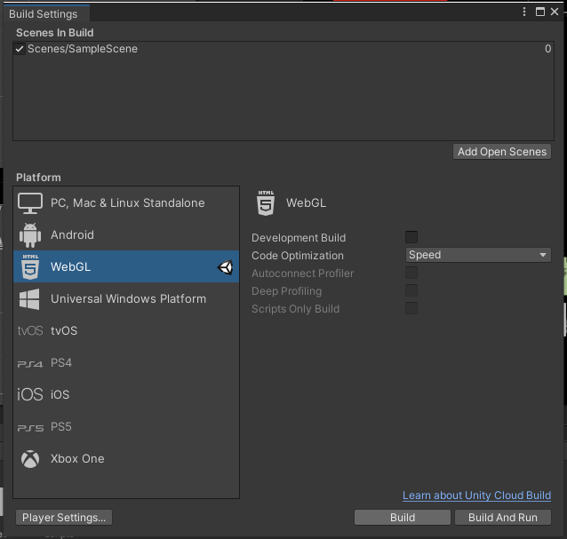

使用Unity WebGL，把我們做好的遊戲上傳至Unity，變成網頁遊戲。
WebGL程式由JavaScript編寫的控制代碼和OpenGL Shafing Language(GLSL)編寫的著色器程式碼組成。
開啟Unity hub，確定自己目前用的版本是否有安裝WebGL
建立專案
到File->Buliding Setting->WebGL，點選Bulid點選Bulid
以上步驟都好了之後，我們Bulid到指定的資料夾，這時我們就會看到index.html檔案接著我們放到自己的網站上!
先把剛剛的資料夾複製到我們網站的code裡，Note:從WebGL輸出後的網頁遊戲需要在伺服器運作之下才可以啟動，在local server無法執行呦~
我們改寫裡面的內容
最後github上傳到gitpage上
附上我的遊戲連結
su3cl3